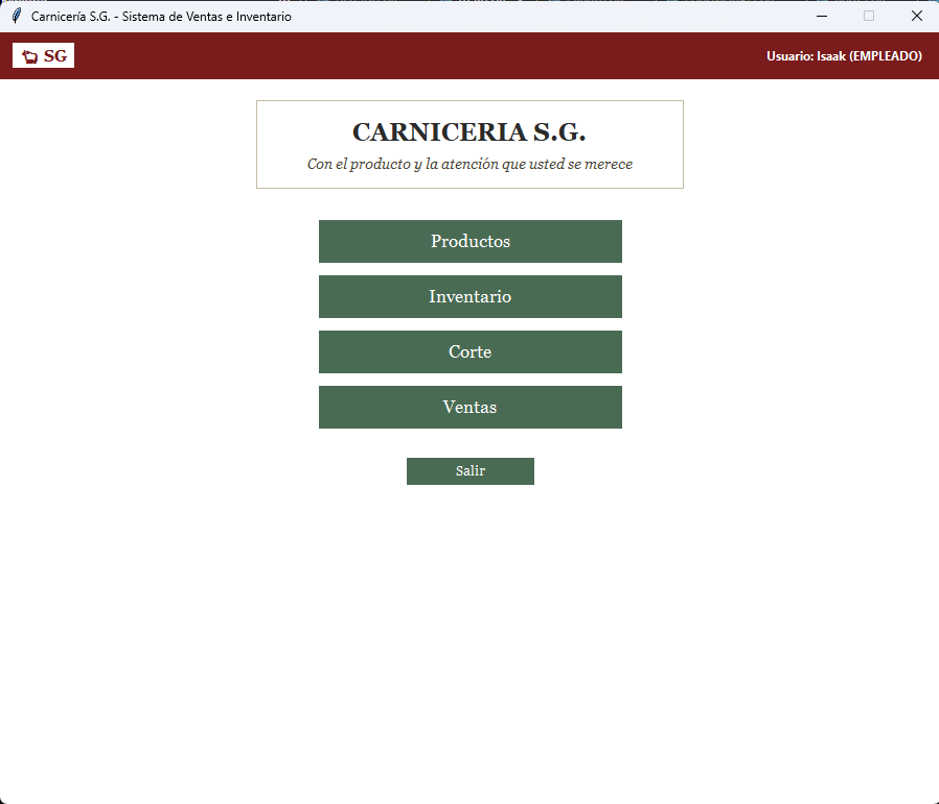

Software Development Student | Python & MySQL | IT & Networking Fundamentals
Hi, I’m Sergio Alonso Sánchez Ayala
I am an Information Technology student at Universidad Tecnológica de Durango, specializing in Multiplatform Software Development. I build team-based desktop applications with Python, SQL databases, and graphical interfaces. I have also earned a Cisco CCNA certificate, so I understand how networks work.
Target position: IT Infrastructure Technical Support and Software Development Intern (remote) at Rodnet.
View my Resume See my projectsSoftware Projects
Point-of-Sale System for Carnicería SG
Team project (5 members) · Final development stage
Problem: A real local butcher shop was using a generic store system that did not fit its selling process. The owners needed software made for the way they sell.
Solution: My team and I designed and have developed a point-of-sale system with four modules: sales, product management, daily cash register closing, and stock control.
My role: Co-developer. I worked with four teammates, wrote Python code, and helped connect the program to the database.
Result so far: We have completed the four modules, and the system is in its final development stage.
Screenshots

Code structure: main.py (starts the program), conexionBD.py (database connection), producto.py, cliente.py, usuario.py and venta.py (one file for each part of the shop), and bd_carniceriasg.sql (the database).
Technical Skills
Certification: CCNA: Switching, Routing, and Wireless Essentials – Cisco Networking Academy (August 2026).
Soft skills: logical thinking, problem solving, teamwork, public speaking, and quick learning.
Resume
Open / download Resume (PDF)Professional Summary
Information Technology student specializing in Multiplatform Software Development at Universidad Tecnológica de Durango. Builds team-based desktop applications with Python, SQL databases, and graphical interfaces, and holds a Cisco CCNA certificate. Quick learner seeking a remote IT support and software internship.
Experience
Social Service Volunteer – Bebeleche, Durango, Mexico | August 2024 – February 2025
- Completed 220 hours of social service over 6 months at a children’s recreational and educational center.
- Presented the center’s attractions to visitors, strengthening public speaking skills.
- Supervised children during activities and kept the facilities clean and organized.
- Collaborated with a team and communicated effectively with supervisors and senior staff.
Projects
Point-of-Sale System for Carnicería SG – Team project (5 members)
- Co-developed a point-of-sale system for a real local butcher shop, with four modules: sales, product management, daily cash register closing, and stock control.
- Designed to replace a generic store system that did not fit the shop’s selling process, using Python, a graphical interface, and a MySQL database.
Education
Higher University Technician (TSU) in Information Technology, Major: Multiplatform Software Development (in progress)
Universidad Tecnológica de Durango, Mexico
High School Diploma, Major: Physics and Mathematics
Bachillerato Humanista Albert Einstein, Durango, Mexico
Certifications
CCNA: Switching, Routing, and Wireless Essentials – Cisco Networking Academy, August 2026
Languages
Spanish – Native | English – Intermediate (not certified)
Contact
Email: sergioaya07@gmail.com
Phone: +52 618 113 9853
GitHub: github.com/AlonsoSanchez-7
Location: Durango, Mexico (available for remote work)
Evaluation Rubric
Rubric for the Digital Professional Portfolio and Resume (English V). It is attached to this portfolio.
Download the rubric